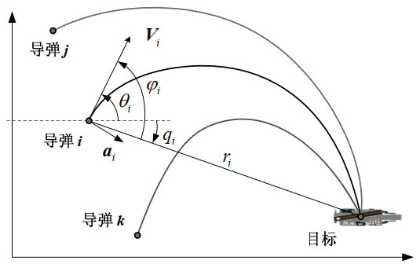

导弹制导问题
比例导引模型
一般地，假设打击目标静止或低速运动, 二维水平面内制导几何表示如图所示。

其中， V_i 分别为第 i 枚导弹的速度； t_{go,i} 为第 i 枚导弹的剩余飞行时间，相应的视线距离 r_i、视线角 q_i、前置角 \varphi_i 和弹道偏角 \theta_i 等制导飞行状态参数表示如图所示(简单起见，省略第 i 枚导弹的下标)。 导弹制导遵循所谓的比例导引关系，即\varphi = \theta − q, \dot{\theta} = N(t) \dot q。 其中， N 为随时间变化的制导增益（比例导引系数）， 因此，导弹视线角动力学方程可以表示为：
\begin{align}
\dot{r}&= -V \cos \varphi \label{1.1} \tag{1.1} \\
r \dot{q}&= -V \sin \varphi \label{1.2} \tag{1.2} \\
r \dot{\varphi}&= (1-N(t)) V \sin \varphi \label{1.3} \tag{1.3}
\end{align}
导弹侧向加速度描述为： \begin{equation} a = V \dot{\theta} = V N \dot{q} = - \frac{N V^2 \sin \varphi}{r} \label{2} \tag{2} \end{equation} 简单地，考虑导弹制导过程中受到最大侧向过载的限制： \begin{equation} r a_{min} \leq - N V^2 \sin \varphi \leq r a_{max} \label{3} \tag{3} \end{equation}
此外，基于落角和有限视场角约束, 制导飞行过程还包含如下边界约束：
\begin{align}
&r(t_0) = r_0, \ q(t_0) = q_0, \ \varphi(t_0) = \varphi_0 \label{4.1} \tag{4.1} \\
&q(t_f) + \varphi(t_f) = \theta(t_f) \label{4.2} \tag{4.2} \\
&\varphi_{min} \leq \varphi \leq \varphi_{max} \label{4.3} \tag{4.3}
\end{align}